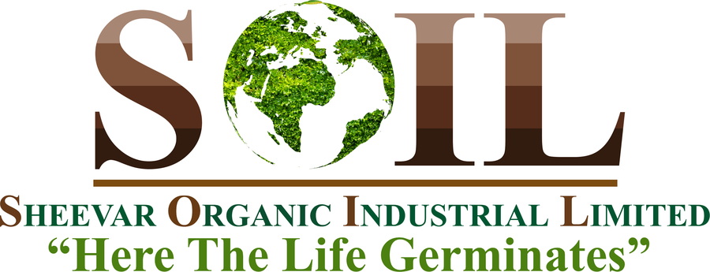
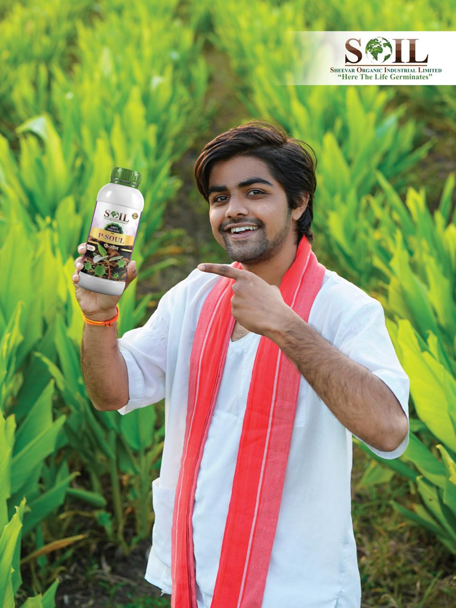
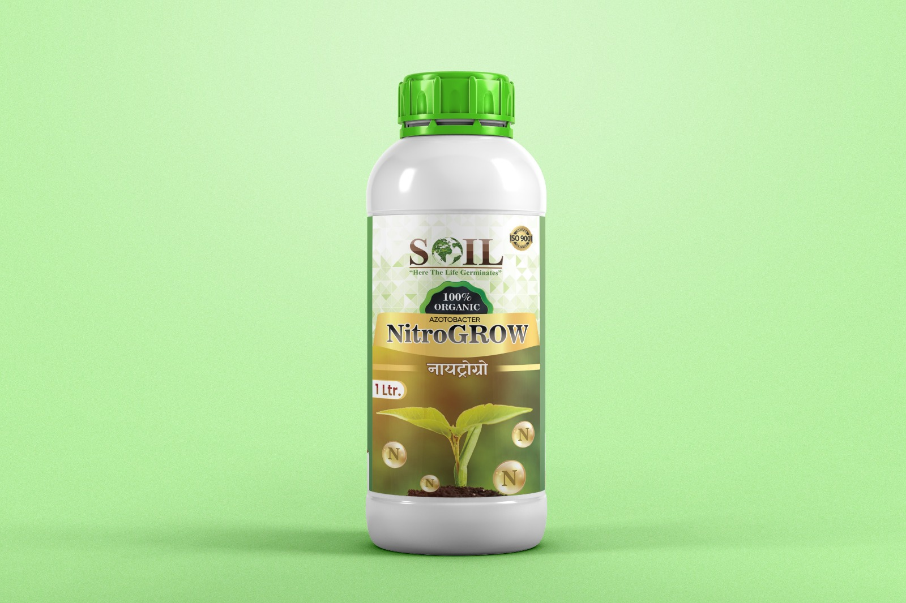
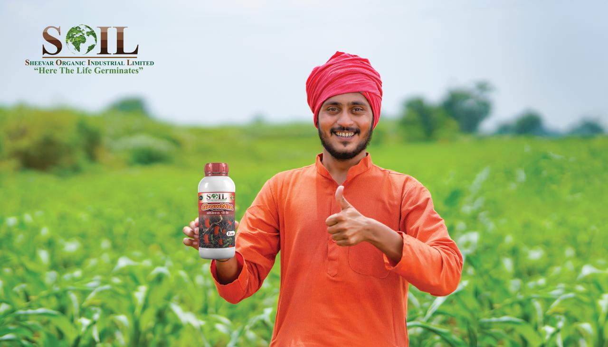
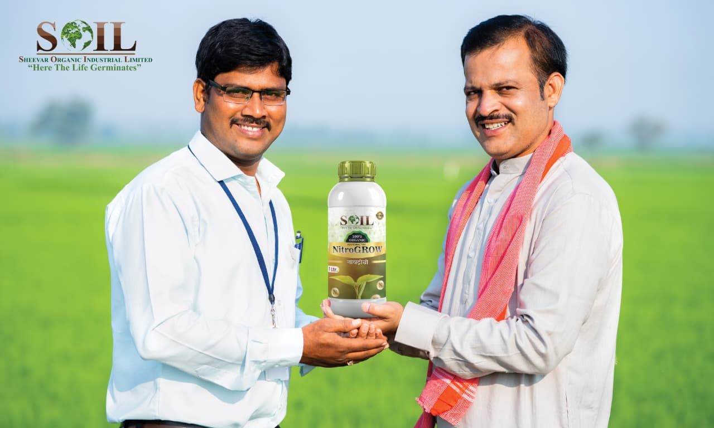
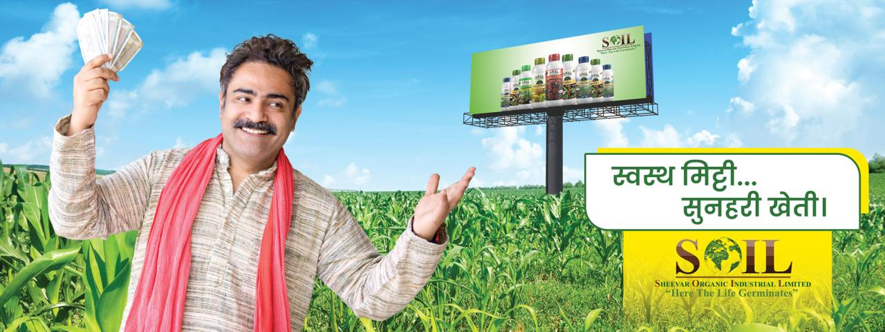
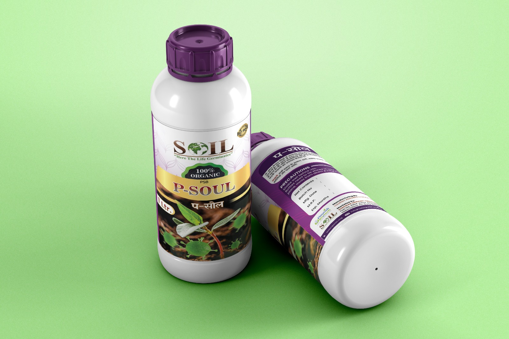
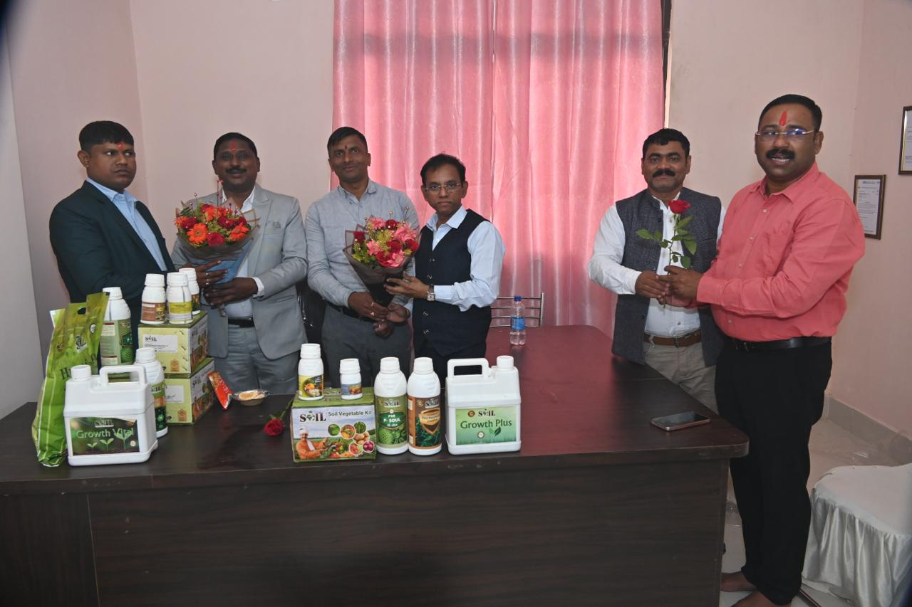

Bio Fertilizers
Scientifically developed bio-products that improve soil fertility and nutrient availability naturally.

Enquire NowSOIL promotes sustainable farming through bio-fertilizers, bio-inputs, organic farming solutions, soil health support, and trusted market linkages for farmers.

At SOIL (Sheevar Organic Industrial Limited), healthy soil is the foundation of healthy food, healthy farmers, and a healthy nation. We support Indian agriculture with sustainable bio-products, organic farming guidance, and long-term farmer partnerships.
Scientifically developed bio-products, expert field guidance, and a support system built for farmers, dealers, distributors, and sustainable agriculture partners.
Scientifically developed bio-products that improve soil fertility and nutrient availability naturally.
Farm assessment, crop nutrition planning, pest guidance, and continuous technical field support.
Structured support for reducing chemical residue and gradually restoring soil health.
Organic crop procurement support for eligible produce under SOIL practices and quality policies.

Improve soil fertility naturally through beneficial microorganisms and better nutrient absorption.
View DetailsFarm assessment, soil health analysis, crop planning, and organic transition guidance.
View DetailsStructured biological solutions and improved practices for gradual soil health restoration.
View Details
Procurement support for eligible organic produce cultivated under recommended SOIL practices.
View DetailsSOIL believes the success of District Dealers and Block Distributors is the foundation of our own growth. We do not simply appoint partners; we build long-term relationships with support at every stage of the business journey.

SOIL welcomes passionate entrepreneurs, agri-professionals, retailers, distributors, sales experts, and progressive farmers to join India's sustainable agriculture movement. With quality products, technical support, training, and long-term business growth, your growth becomes our priority.
Sheevar Organic Industrial Limited


Share your enquiry for District Dealer, Block Distributor, Retailer, Sales Executive, farmer support, product training, or market linkage opportunities.